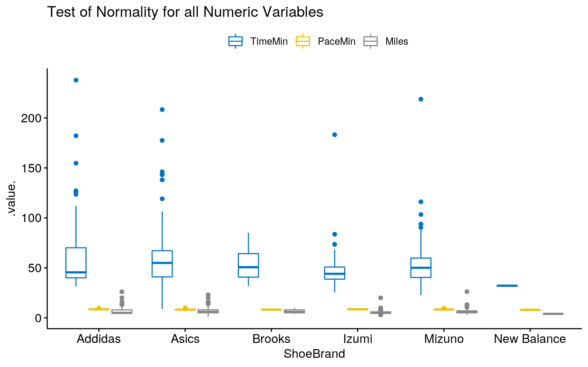
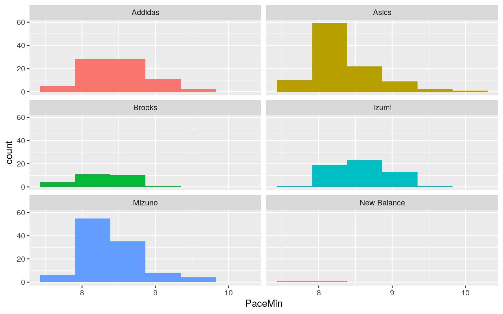
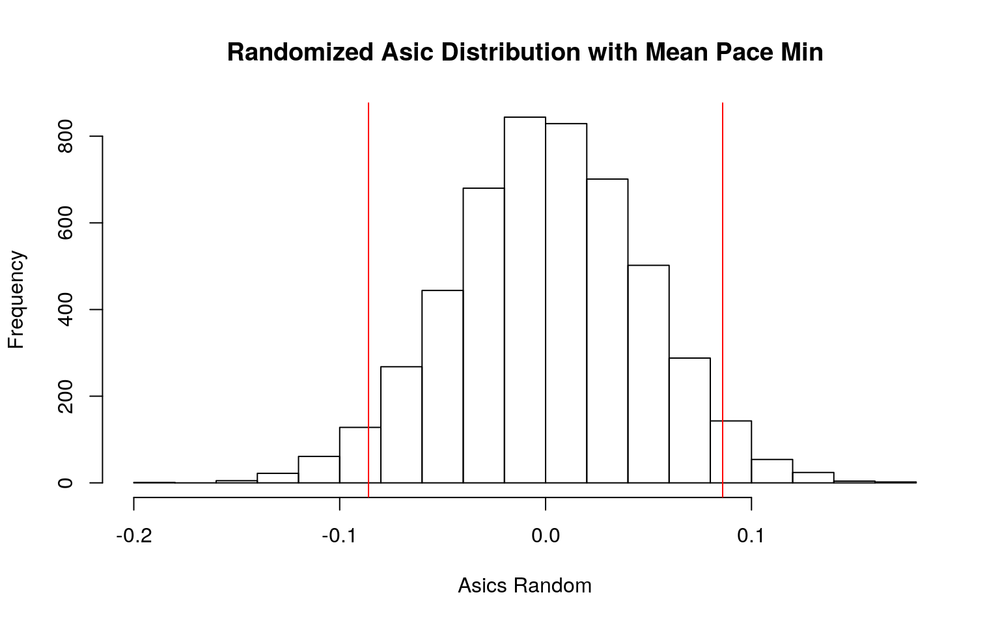
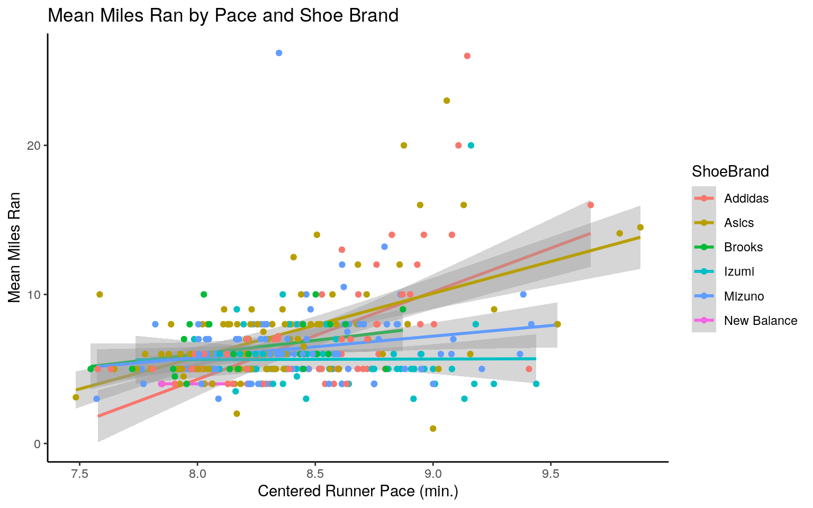
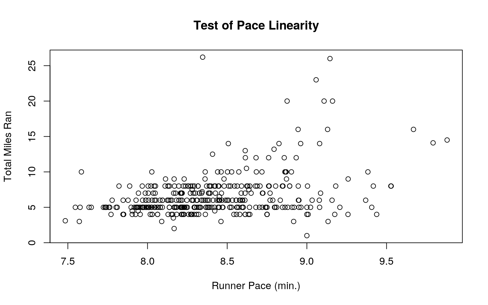
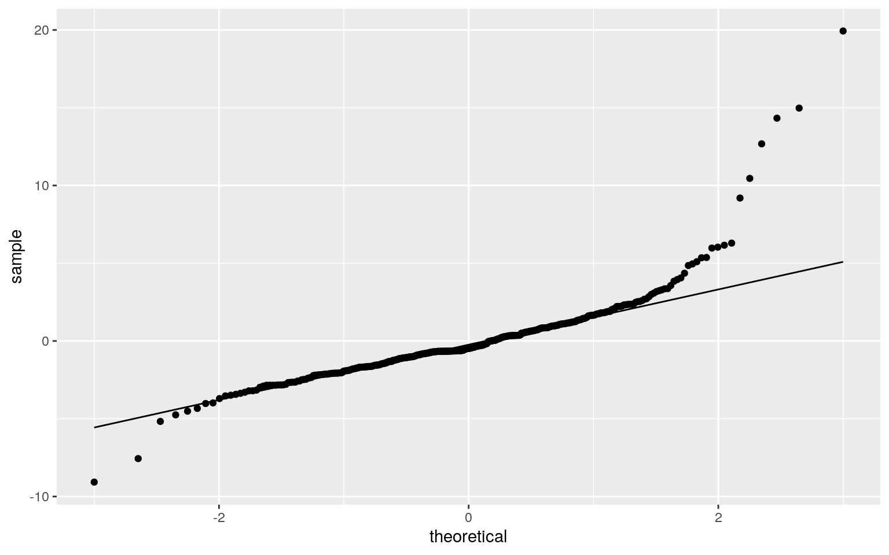
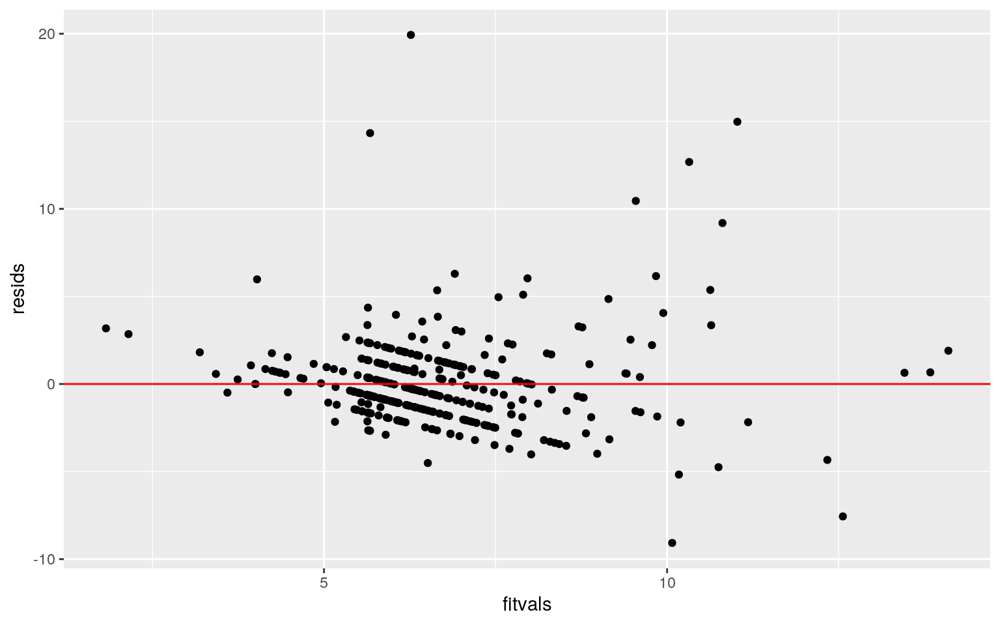
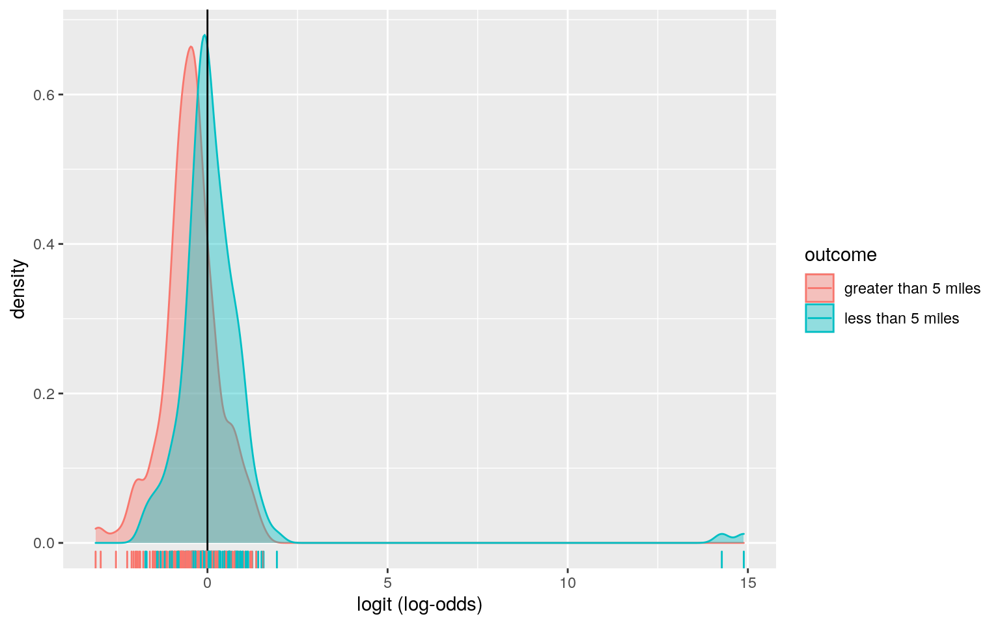
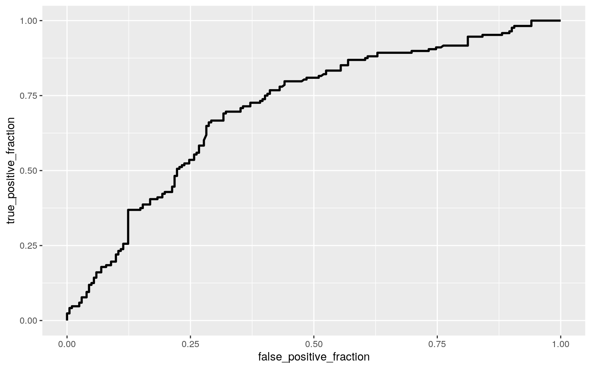

Since COVID delayed my first marathon, I chose to analyze the daily training for a marathon runner which I found in the Stat2Data package. The modified Marathon dataset I imported contains 307 observations which document a runner’s daily run from 2005-2006 with no ShoeBrand N/A entries. I will be looking at the numeric variables Miles: Miles for training run, TimeMin: Training time (in minutes), and the PaceMin: Running pace (in minutes per mile). The binary variable Short codes for 1=5 miles or less & 0=more than 5 miles run. Finally, the categorical variable ShoeBrand documents if Addidas, Asics, Brooks, Izumis, Mizunos, or New Balances were worn during the run.
Marathon <- read.csv("Marathon.csv")
Marathon <- subset (Marathon, select = -c(X, Date, Time, Pace, After2004))
Marathon <- na.omit(Marathon)
head(Marathon)## Miles ShoeBrand TimeMin PaceMin Short
## 1 5 Addidas 41.217 8.243 1
## 2 5 Addidas 43.517 8.703 1
## 3 4 Addidas 34.317 8.579 1
## 4 5 Addidas 43.983 8.797 1
## 5 5 Addidas 43.000 8.600 1
## 6 5 Addidas 42.633 8.527 1To see if the average training time, total miles, and mile pace are different across the shoe brands, I performed a One-Way MANOVA.
#Normality and Equal Variance
library(ggpubr)
ggboxplot(Marathon, x = "ShoeBrand", y = c("TimeMin", "PaceMin", "Miles"),
merge = TRUE, palette = "jco", main = "Test of Normality for all Numeric Variables") 
#ANOVA Model
library(car)
multi_manova<-lm(cbind(TimeMin,PaceMin,Miles) ~ ShoeBrand, data = Marathon)
#Results
Manova(multi_manova, type=3)##
## Type III MANOVA Tests: Pillai test statistic
## Df test stat approx F num Df den Df Pr(>F)
## (Intercept) 1 0.99783 55419 3 362 < 2.2e-16 ***
## ShoeBrand 5 0.15330 4 15 1092 6.449e-07 ***
## ---
## Signif. codes: 0 '***' 0.001 '**' 0.01 '*' 0.05 '.' 0.1
' ' 1Preforming the MANOVA, the result is a p- value of 6.449e-7 which means this dataset provides significant evidence against the null hypothesis. Therefore, shoe brand does have an effect on mean training time, total miles run, and mile pace. However, there are limitations to this analysis. Looking at the boxplot, we can see that there are a lot of outliers and equal variance is not met for all dependent variables. We also do not know if there is an absence of multicollinearity meaning the numeric variables may be too correlated.
To look further into the shoe brand effect on mean training time, total miles run, and mile pace, I conducted a One-Way ANOVA for each dependent variable. The Hypotheses are as follows:
Ho: The mean training time of all six shoe brands are equal.
Ha: The mean training time of all six shoe brands are not equal.
Ho: The mean mile pace of all six shoe brands are equal.
Ha: The mean mile pace of all six shoe brands are not equal.
Ho: The mean total miles ran for all six shoe brands are equal.
Ha: The mean total miles ran for all six shoe brands are not equal.
#ANOVA Models
#training time
train_anova <- lm(TimeMin~ShoeBrand, data=Marathon)
#mile pace
pace_anova <- lm(PaceMin~ShoeBrand, data=Marathon)
#total miles
miles_anova <- lm(Miles~ShoeBrand, data=Marathon)
#Test
Anova(train_anova, type=3)## Anova Table (Type III tests)
##
## Response: TimeMin
## Sum Sq Df F value Pr(>F)
## (Intercept) 275185 1 349.1762 < 2e-16 ***
## ShoeBrand 9383 5 2.3812 0.03818 *
## Residuals 286868 364
## ---
## Signif. codes: 0 '***' 0.001 '**' 0.01 '*' 0.05 '.' 0.1
' ' 1Anova(pace_anova, type=3)## Anova Table (Type III tests)
##
## Response: PaceMin
## Sum Sq Df F value Pr(>F)
## (Intercept) 5313.2 1 33772.7196 < 2.2e-16 ***
## ShoeBrand 3.5 5 4.5061 0.0005351 ***
## Residuals 57.3 364
## ---
## Signif. codes: 0 '***' 0.001 '**' 0.01 '*' 0.05 '.' 0.1
' ' 1Anova(miles_anova, type=3)## Anova Table (Type III tests)
##
## Response: Miles
## Sum Sq Df F value Pr(>F)
## (Intercept) 3713.3 1 395.878 < 2e-16 ***
## ShoeBrand 127.1 5 2.709 0.02028 *
## Residuals 3414.3 364
## ---
## Signif. codes: 0 '***' 0.001 '**' 0.01 '*' 0.05 '.' 0.1
' ' 1# all p-values < 0.05
#Post Hoc emmeans
library(emmeans)
lsmeans(train_anova, pairwise~ShoeBrand)## $lsmeans
## ShoeBrand lsmean SE df lower.CL upper.CL
## Addidas 61.0 3.26 364 54.56 67.4
## Asics 60.7 2.77 364 55.29 66.2
## Brooks 53.3 5.51 364 42.46 64.1
## Izumi 48.4 3.72 364 41.13 55.8
## Mizuno 53.5 2.70 364 48.22 58.8
## New Balance 32.1 19.85 364 -6.89 71.2
##
## Confidence level used: 0.95
##
## $contrasts
## contrast estimate SE df t.ratio p.value
## Addidas - Asics 0.247 4.28 364 0.058 1.0000
## Addidas - Brooks 7.690 6.40 364 1.201 0.8360
## Addidas - Izumi 12.542 4.95 364 2.535 0.1167
## Addidas - Mizuno 7.445 4.24 364 1.757 0.4947
## Addidas - New Balance 28.840 20.12 364 1.434 0.7065
## Asics - Brooks 7.442 6.16 364 1.208 0.8329
## Asics - Izumi 12.294 4.63 364 2.653 0.0876
## Asics - Mizuno 7.198 3.87 364 1.862 0.4276
## Asics - New Balance 28.592 20.04 364 1.427 0.7108
## Brooks - Izumi 4.852 6.64 364 0.730 0.9781
## Brooks - Mizuno -0.244 6.13 364 -0.040 1.0000
## Brooks - New Balance 21.150 20.60 364 1.027 0.9088
## Izumi - Mizuno -5.096 4.60 364 -1.109 0.8776
## Izumi - New Balance 16.298 20.20 364 0.807 0.9662
## Mizuno - New Balance 21.394 20.03 364 1.068 0.8938
##
## P value adjustment: tukey method for comparing a family
of 6 estimates# pairwise p-values > 0.05
lsmeans(pace_anova, pairwise~ShoeBrand)## $lsmeans
## ShoeBrand lsmean SE df lower.CL upper.CL
## Addidas 8.47 0.0461 364 8.38 8.56
## Asics 8.33 0.0391 364 8.25 8.40
## Brooks 8.24 0.0778 364 8.09 8.39
## Izumi 8.57 0.0525 364 8.47 8.68
## Mizuno 8.40 0.0382 364 8.33 8.48
## New Balance 8.04 0.2805 364 7.48 8.59
##
## Confidence level used: 0.95
##
## $contrasts
## contrast estimate SE df t.ratio p.value
## Addidas - Asics 0.1456 0.0604 364 2.408 0.1561
## Addidas - Brooks 0.2318 0.0904 364 2.563 0.1091
## Addidas - Izumi -0.1003 0.0699 364 -1.435 0.7057
## Addidas - Mizuno 0.0715 0.0599 364 1.194 0.8394
## Addidas - New Balance 0.4380 0.2842 364 1.541 0.6379
## Asics - Brooks 0.0862 0.0871 364 0.991 0.9208
## Asics - Izumi -0.2459 0.0655 364 -3.755 0.0028
## Asics - Mizuno -0.0741 0.0546 364 -1.356 0.7533
## Asics - New Balance 0.2925 0.2832 364 1.033 0.9067
## Brooks - Izumi -0.3321 0.0939 364 -3.538 0.0060
## Brooks - Mizuno -0.1603 0.0866 364 -1.850 0.4349
## Brooks - New Balance 0.2062 0.2911 364 0.709 0.9809
## Izumi - Mizuno 0.1718 0.0649 364 2.645 0.0892
## Izumi - New Balance 0.5383 0.2853 364 1.887 0.4121
## Mizuno - New Balance 0.3665 0.2831 364 1.295 0.7878
##
## P value adjustment: tukey method for comparing a family
of 6 estimates# Asics - Izumi p = 0.0028
# Brooks - Izumi p = 0.0060
lsmeans(miles_anova, pairwise~ShoeBrand)## $lsmeans
## ShoeBrand lsmean SE df lower.CL upper.CL
## Addidas 7.08 0.356 364 6.384 7.78
## Asics 7.20 0.302 364 6.608 7.79
## Brooks 6.44 0.601 364 5.261 7.62
## Izumi 5.65 0.406 364 4.851 6.45
## Mizuno 6.35 0.295 364 5.767 6.93
## New Balance 4.00 2.166 364 -0.259 8.26
##
## Confidence level used: 0.95
##
## $contrasts
## contrast estimate SE df t.ratio p.value
## Addidas - Asics -0.117 0.467 364 -0.251 0.9999
## Addidas - Brooks 0.641 0.698 364 0.919 0.9416
## Addidas - Izumi 1.435 0.540 364 2.658 0.0864
## Addidas - Mizuno 0.737 0.462 364 1.596 0.6019
## Addidas - New Balance 3.084 2.195 364 1.405 0.7240
## Asics - Brooks 0.759 0.672 364 1.129 0.8693
## Asics - Izumi 1.552 0.506 364 3.069 0.0277
## Asics - Mizuno 0.855 0.422 364 2.026 0.3294
## Asics - New Balance 3.201 2.187 364 1.464 0.6875
## Brooks - Izumi 0.793 0.725 364 1.094 0.8835
## Brooks - Mizuno 0.096 0.669 364 0.144 1.0000
## Brooks - New Balance 2.442 2.247 364 1.087 0.8865
## Izumi - Mizuno -0.697 0.501 364 -1.390 0.7328
## Izumi - New Balance 1.649 2.203 364 0.748 0.9756
## Mizuno - New Balance 2.346 2.186 364 1.074 0.8917
##
## P value adjustment: tukey method for comparing a family
of 6 estimates# Asics - Izumi p = 0.0277The One-Way ANOVA results were significant for all dependant variables. However, when performing a post hoc analysis, shoe brand was only shown to have a significant effect between Asics-Izumi (p-val = 0.0028) & Brooks-Izumi (p-val = 0.006) for average pace and also an effect on average total miles between Asics - Izumi (p-val = 0.0277).
The MANOVA and ANOVA tests use a 0.05 alpha level meaning each has a 5% probability of making a Type I error. However, since the MANOVA and ANOVA test use multiple comparisons against the numeric variables, the chance of a Type I error actually increases. To counteract that effect a bonferroni correction is used to accurately analyze the p-values.
#bonferroni = 0.05/#comparisons
bonfer <- 0.05/6
bonfer## [1] 0.008333333The bonferroni correction for the ANOVA tests I conducted decreases the significance level from 0.05 to 0.0083. This means my past conclusion was incorrect and that the dataset only has evidence for the mean mile pace of all six shoe brands being different.
Next I performed a randomized two-tailed T Test to analyze the difference in pace mean for shoe brands. I chose to look at Asics specifically, since it was present in the significant One-Way ANOVA results from above.
# separate dataframe
pace_shoe <- Marathon %>% select(ShoeBrand, PaceMin)
#ggplot non-normal distribution of Pace for each Shoe
ggplot(pace_shoe, aes(PaceMin,fill=ShoeBrand)) + geom_histogram(bins=6.5) + facet_wrap(~ShoeBrand,ncol=2) + theme(legend.position="none")
#simulate null distribution
#mean of pace for each shoe brand if there was no association
pace_shoe %>% group_by(ShoeBrand) %>% summarize(means=mean(PaceMin)) %>% summarize(`mean_diff`=diff(means))## # A tibble: 5 x 1
## mean_diff
## <dbl>
## 1 -0.146
## 2 -0.0862
## 3 0.332
## 4 -0.172
## 5 -0.367#differences vector
rand_dist<-vector()
#scramble and mean difference for Asics all other brands
for(i in 1:5000){
new <- data.frame(Pace=sample(pace_shoe$PaceMin), Brand=pace_shoe$ShoeBrand)
rand_dist[i] <- mean(new[new$Brand=="Asics",]$Pace) - mean(new[new$Brand!="Asics",]$Pace)}
#two-tailed p
#probability of getting a mean difference as extreme if there was truly no difference between Asics and other shoe brands on mile pace
mean(rand_dist > 0.086 | rand_dist < -0.086)## [1] 0.0662#t-test compare
t.test(data=pace_shoe, PaceMin~ShoeBrand=="Asics",)##
## Welch Two Sample t-test
##
## data: PaceMin by ShoeBrand == "Asics"
## t = 2.3209, df = 173.84, p-value = 0.02145
## alternative hypothesis: true difference in means is not
equal to 0
## 95 percent confidence interval:
## 0.01678574 0.20760959
## sample estimates:
## mean in group FALSE mean in group TRUE
## 8.440169 8.327971The randomized analysis gives significant evidence that the true difference in pace means is not equal to 0 for Asics (t= 2.321, df = 173.84, p= 0.021).
#graph randomized Asics' with mean pace cutoff
{hist(rand_dist, main="Randomized Asic Distribution with Mean Pace Min", xlab = "Asics Random"); abline(v = c(-0.086, 0.086), col="red")}
For my linear model I chose to predict the total miles run per session from Pace and Shoe Brand, with interaction.
#centered variables
Marathon$pace_c <- Marathon$PaceMin - mean(Marathon$PaceMin)
lmfit <- lm(Miles ~ pace_c*ShoeBrand, data = Marathon)
summary(lmfit)##
## Call:
## lm(formula = Miles ~ pace_c * ShoeBrand, data =
Marathon)
##
## Residuals:
## Min 1Q Median 3Q Max
## -9.0740 -1.4337 -0.4771 0.9615 19.9338
##
## Coefficients:
## Estimate Std. Error t value Pr(>|t|)
## (Intercept) 6.70473 0.31846 21.053 < 2e-16 ***
## pace_c 5.86841 0.77883 7.535 4.04e-13 ***
## ShoeBrandAsics 0.84238 0.41841 2.013 0.0448 *
## ShoeBrandBrooks 0.04406 0.67546 0.065 0.9480
## ShoeBrandIzumi -1.06199 0.50549 -2.101 0.0363 *
## ShoeBrandMizuno -0.34858 0.41134 -0.847 0.3973
## ShoeBrandNew Balance -2.70473 4.23902 -0.638 0.5238
## pace_c:ShoeBrandAsics -1.59321 1.00193 -1.590 0.1127
## pace_c:ShoeBrandBrooks -4.03543 1.79748 -2.245 0.0254 *
## pace_c:ShoeBrandIzumi -5.82969 1.24603 -4.679 4.10e-06
***
## pace_c:ShoeBrandMizuno -4.43978 1.02891 -4.315 2.07e-05
***
## pace_c:ShoeBrandNew Balance -5.86841 10.12406 -0.580
0.5625
## ---
## Signif. codes: 0 '***' 0.001 '**' 0.01 '*' 0.05 '.' 0.1
' ' 1
##
## Residual standard error: 2.705 on 358 degrees of freedom
## Multiple R-squared: 0.2602, Adjusted R-squared: 0.2375
## F-statistic: 11.45 on 11 and 358 DF, p-value: < 2.2e-16Controlling for shoe brand, as the average mile ran in a training session increases by 1 mile, the average pace per mile increases by 2.2407 minutes. Controlling for pace, when wearing Addidas the average mile ran increases by 0.5381 miles. For Asics it increases by 1.3805 miles, Brooks it increases by 0.5822 miles, and Mizuno increases 0.1896 miles. The only decrease in average mile ran is when wearing Izumi which takes off 0.5238 miles from the training session. When looking at the interaction terms we see the effect of pace on average miles run per training session is different if you’re wearing Addidas compared to other shoe brands.
ggplot(Marathon ,aes(x = PaceMin, y = Miles, color=ShoeBrand)) + geom_smooth(method='lm') + geom_point() + xlab('Centered Runner Pace (min.)') + ylab('Mean Miles Ran') + ggtitle('Mean Miles Ran by Pace and Shoe Brand') + theme_classic() Looking at the adjusted r squared value, 23.75% of the average mile variation can be accounted for by the model.
To ensure this is a reliable model I checked the linearity, normality, and homoskedasticity assumptions.
Plotting Pace against Miles, there was a very weak positive linear association.
Then the residuals were used in a QQ plot to visualize normality and in a Residuals Plot to look for Equal Variance.
There was a heavy right skew to the model and when a Shapiro test was run there was significant evidence of non-normality.
Finally to ensure equal variance and test homoskedasticity I used bptest() and fail to reject the null hypothesis, confirming the data is homoskedsastic.
#Residual Calculation
resids<-lmfit$residuals #residuals
fitvals<-lmfit$fitted.values #yhats
#Linearity of numeric predictors
plot(Marathon$PaceMin, Marathon$Miles, xlab = 'Runner Pace (min.)', ylab = 'Total Miles Ran', main = 'Test of Pace Linearity')
#Confirm Normality
#QQ Plot
ggplot()+geom_qq(aes(sample=resids))+geom_qq_line(aes(sample=resids))
#Shapiro
#Ho: distribution is normal
shapiro.test(resids)##
## Shapiro-Wilk normality test
##
## data: resids
## W = 0.80586, p-value < 2.2e-16#Confirm Homoskedasticity
#Ho: homoskedsastic
library(sandwich)
library(lmtest)
bptest(lmfit)##
## studentized Breusch-Pagan test
##
## data: lmfit
## BP = 19.606, df = 11, p-value = 0.05104#Confirm Equal Variance
#Residuals Plot
ggplot()+geom_point(aes(fitvals,resids))+geom_hline(yintercept=0, color='red')
# some funneling violation in equal variance (Limitation)coeftest(lmfit, vcov = vcovHC(lmfit, type="HC1"))##
## t test of coefficients:
##
## Estimate Std. Error t value Pr(>|t|)
## (Intercept) 6.704732 0.305524 21.9450 < 2.2e-16 ***
## pace_c 5.868411 1.280594 4.5826 6.353e-06 ***
## ShoeBrandAsics 0.842377 0.455982 1.8474 0.065515 .
## ShoeBrandBrooks 0.044058 0.466951 0.0944 0.924882
## ShoeBrandIzumi -1.061993 0.384055 -2.7652 0.005983 **
## ShoeBrandMizuno -0.348581 0.395386 -0.8816 0.378572
## ShoeBrandNew Balance -2.704732 0.305524 -8.8528 <
2.2e-16 ***
## pace_c:ShoeBrandAsics -1.593210 1.586037 -1.0045
0.315805
## pace_c:ShoeBrandBrooks -4.035430 1.560221 -2.5864
0.010091 *
## pace_c:ShoeBrandIzumi -5.829693 1.777627 -3.2795
0.001142 **
## pace_c:ShoeBrandMizuno -4.439783 1.353091 -3.2812
0.001135 **
## pace_c:ShoeBrandNew Balance -5.868411 1.280594 -4.5826
6.353e-06 ***
## ---
## Signif. codes: 0 '***' 0.001 '**' 0.01 '*' 0.05 '.' 0.1
' ' 1With a robust evaluation, the standard error decreases for all variables and interactions. With this many more effects are considered significant such as ShoeBrand4 main effect and it’s interaction.
To compute bootstrapped standard errors I used the resampling residuals method.
#resample and replace residuals
#refit model and save coef
resid_resamp <- replicate(5000,{
new_resids <- sample(resids,replace=TRUE)
Marathon$new_y <- fitvals + new_resids
lmfit <- lm(new_y ~ pace_c*ShoeBrand, data=Marathon)
coef(lmfit) })
#Bootstrapped SEs
resid_resamp%>%t%>%as.data.frame%>%summarize_all(sd)## (Intercept) pace_c ShoeBrandAsics ShoeBrandBrooks
ShoeBrandIzumi ShoeBrandMizuno
## 1 0.3111615 0.7679006 0.4033298 0.6601388 0.4923034
0.4022465
## ShoeBrandNew Balance pace_c:ShoeBrandAsics
pace_c:ShoeBrandBrooks pace_c:ShoeBrandIzumi
## 1 4.262132 0.9889466 1.766358 1.223507
## pace_c:ShoeBrandMizuno pace_c:ShoeBrandNew Balance
## 1 1.024901 10.07343I chose to create a logistic regression model predicting Short (my binary variable indicating length of training run) using Shoe Brand and Pace without interaction.
I chose these predictors again because Short is a binary explanatory variable dependent on my Miles variable, and TimeMin and PaceMin are so closely related I knew the ROC curve was practically going to be a box.
#binary already defined
#1 = 5 miles or less
#0 = more than 5 miles run
Marathon <- Marathon %>% mutate(outcome=ifelse(Short==1,"less than 5 miles","greater than 5 miles"))
#no interaction total time & average pace
lmfit2 <- glm(Short~ShoeBrand+pace_c, data=Marathon, family="binomial")
#odds scale coefs
coef(lmfit2) %>% exp %>% round(5) %>% data.frame## .
## (Intercept) 1.17360e+00
## ShoeBrandAsics 4.07940e-01
## ShoeBrandBrooks 3.94580e-01
## ShoeBrandIzumi 1.98496e+00
## ShoeBrandMizuno 5.55190e-01
## ShoeBrandNew Balance 1.00484e+06
## pace_c 1.99920e-01These coefficient estimates indicate how the odds of predicting Short change for each shoe brand and for every additional minute increase to running pace. Since we used exp these are the factors by which the odds increase.
For example, we see ShoeBrand4 Izumi increases the odds of predicting a run less than 5 miles by a factor of 0.26. ShoeBrand3 Brooks on the other hand only increases those odds by a factor of 0.05.
#function odds to probs
odd2prob <- function(odds) {odds/(1+odds)}
#predicted probs from model
probs <- predict(lmfit2, type="response")
#Confusion matrix
table(predict = as.numeric(probs>.5), truth=Marathon$Short) %>% addmargins## truth
## predict 0 1 Sum
## 0 156 82 238
## 1 46 86 132
## Sum 202 168 370#Accuracy
(156+86)/370## [1] 0.6540541#TNR
86/132## [1] 0.6515152#TPR
156/238## [1] 0.6554622#PPV
156/202## [1] 0.7722772This Logistics Regression model is 65.4% accurate and has a pretty equivalent sensitivity and specificity of ~65% correct classifications. Precision of the model is the greatest with 77% positive predictive value.
#1 = 5 miles or less
#0 = more than 5 miles run
#log-odds for everyone
Marathon$logit <- predict(lmfit2, type="link")
Marathon %>% ggplot() + geom_density(aes(logit, color=outcome, fill=outcome), alpha=.4) + geom_vline(xintercept=0) + xlab("logit (log-odds)") + geom_rug(aes(logit,color=outcome))  This plot indicates that for logit>0 the model predicts a run less than 5 miles (1) and for logit<0 the model predicts a run greater than 5 miles (0).
library(plotROC)
ROCplot<-ggplot(Marathon) + geom_roc(aes(d=Short,m=probs), n.cuts=0)
ROCplot
calc_auc(ROCplot)## PANEL group AUC
## 1 1 -1 0.7086427Plotting Sensitivity against 1-Specificity, the model is not exactly a linear shape. With a AUC = 0.71 we can determine more clearly that the model falls into the fair predictor category (07-0.8).
lmfit3 <- glm(Short~ShoeBrand+PaceMin+Miles+TimeMin, data=Marathon, family="binomial")
#predicted probs from model
probs2 <- predict(lmfit3, type="response")
#Confusion matrix
table(predict = as.numeric(probs2>.5), truth=Marathon$Short) %>% addmargins## truth
## predict 0 1 Sum
## 0 202 0 202
## 1 0 168 168
## Sum 202 168 370#Accuracy
(202+168)/370## [1] 1#TNR
168/168## [1] 1#TPR
202/2020## [1] 0.1#PPV
202/202## [1] 1#AUC calculator
library(pROC)
auc(Marathon$Short,probs2)## Area under the curve: 1With all of the variables used, the logistic regression becomes a perfect predictor.
…